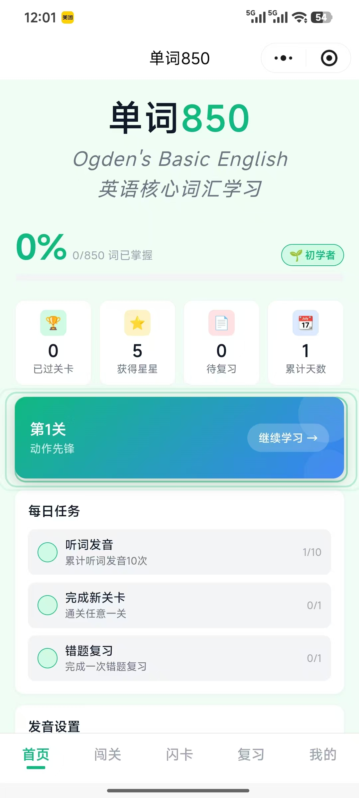
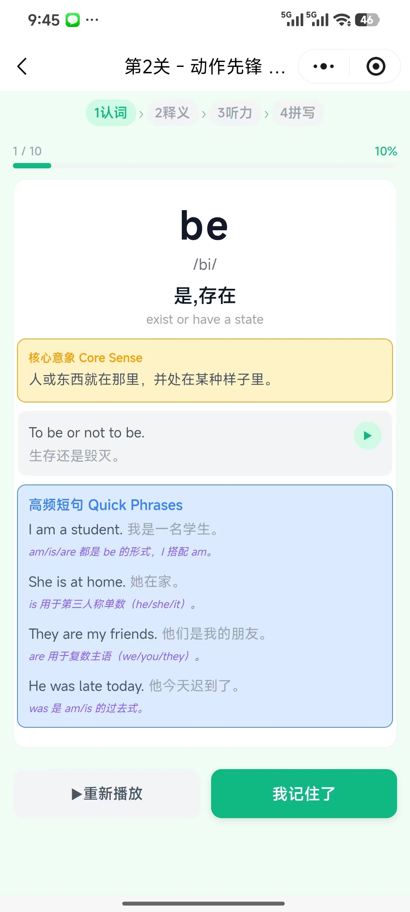
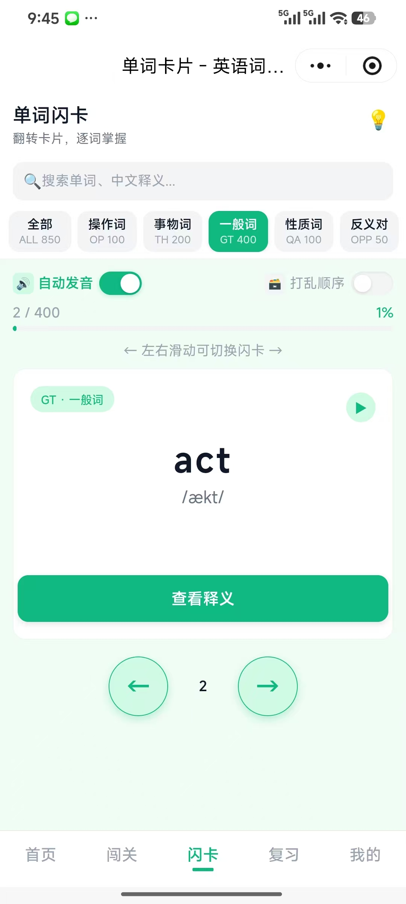
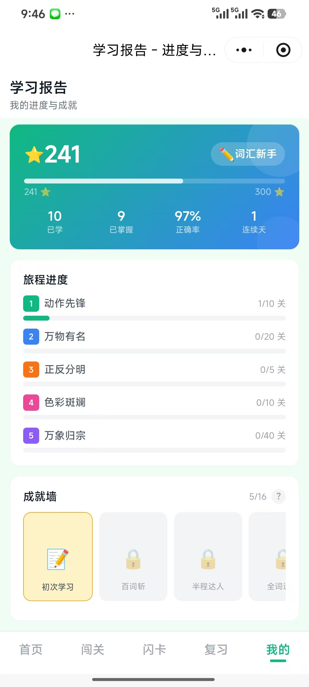

源自 1930 年代的语言学经典，至今仍是最高效的核心词汇学习框架。
Basic English 是由英国语言学家 C. K. Ogden（查尔斯·凯·奥格登） 于 1930 年代设计的一套简化英语系统。它的核心理念是：用尽可能少的词汇覆盖日常交流所需的绝大部分场景。
尽管只有 850 个词，但通过组合与派生，这套系统可以表达极其丰富的内容。Ogden 曾用这 850 个词成功简写过多部英国文学名著。温斯顿·丘吉尔与罗斯福都曾支持将其作为国际辅助语言的尝试。
今天，英语词汇量已超过 17 万，但高频核心词始终稳定。850 词覆盖了日常口语和书面语中约 90% 的出现频率。先掌握这 850 个"骨架词"，再学专业词汇时，你能快速判断哪些是真正的新概念。
两种形态，同一套核心词库，数据互通，体验一致。
基于 React + TypeScript + Vite 构建的现代化单页应用，支持浏览器文字转语音（TTS）实现英美发音切换。所有学习进度、通关记录、错题数据通过 localStorage 本地持久化，无需登录、无需服务端。
原生微信小程序实现，专为移动端碎片化学习场景优化。支持虚拟键盘拼写练习、连击 Combo 动画、星星奖励与每日任务系统。自定义 TabBar 与主题配置，带来流畅的沉浸式闯关体验。
融合分级闯关、四维练习、错题复习与游戏化激励，打造闭环学习体验。
每个词配有"核心意象"描述，用画面和感觉捕捉词义本质。例如 come → "朝说话者靠近，让距离变短"，绕过中文翻译中介，建立语义直觉。
850 词按主题旅程分为 85 个小关卡，每关 10 词。完成学习即可解锁闯关测试，通关获得星星奖励，循序渐进建立成就感。
卡片浏览、词义选择、听音辨词、拼写键盘四种题型轮番训练。从认知到输出，全方位巩固记忆，减少"哑巴英语"。
自动收集闯关中的错题，支持专项复习与手动清除。错题本实时同步学习状态，针对性补强薄弱环节。
答对获得星星、连击触发 Combo 动画、完成每日任务额外奖励。正向激励驱动持续学习，让背单词像游戏一样上瘾。
以用户为中心的设计理念，让学习过程专注而愉悦。单词不配图片，通过核心意象建立语义直觉。

学习概览、关卡进度与每日任务

四步练习：认词→释义→听力→拼写

翻转卡片，分类筛选，逐词掌握

学习报告、旅程进度与成就墙
从初次接触到深度掌握，每一步都有科学方法支撑。
浏览单词、音标、核心意象、英文释义与例句，建立初步认知。支持语音播放与高频短句拓展。
认词→释义→听力→拼写，四种题型轮番训练。纯语音出题模式训练听力反应，答对即得星星。
自动归档错题，支持专项复习模式。针对性重复训练薄弱词汇，直到完全掌握。
每日任务驱动持续学习，累计天数与连击记录可视化。用游戏化机制培养长期学习习惯。
每天 10 分钟，掌握英语最核心的 850 个词汇。网页版即开即学，小程序扫码即达。